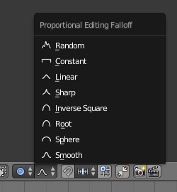
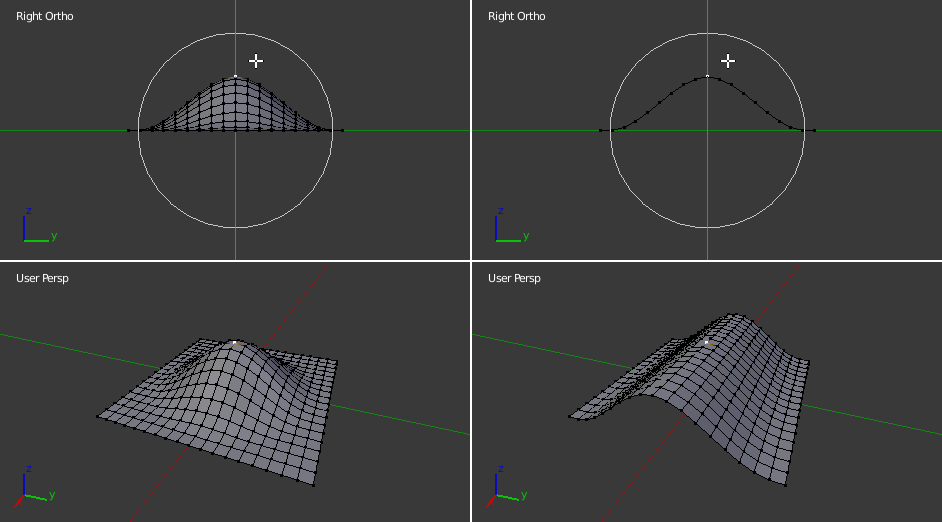

Пропорційна Правка -- Proportional Edit¶
Пропорційна Правка -- Proportional Edit -- це спосіб трансформування виділених елементів (таких як вершини), при якому вплив трансформації також розповсюджується на інші сусідні елементи. Наприклад, переміщення одиничної вершини буде спричиняти рух поточно невиділених вершин у межах певного заданого діапазону. Невиділені вершини, що знаходяться ближче до виділеної вершини будуть пересуватися більше, ніж ті, що знаходяться дальше (тобто, вони будуть рухатися пропорційно відносно до локації виділеного елемента). Оскільки пропорційна правка впливає на сусідню геометрію, то вона дуже корисна, коли вам потрібно плавно деформувати поверхню щільної сіті.
Ghi chú
Ліплення -- Sculpting
Blender також має функцію ліплення -- Ліплення -- Sculpting, що надає пензлі та інструменти для пропорційної правки сіті без можливості видимості окремих вершин.
Режим Об'єкта -- Object Mode¶
Орієнтир
| Mode: | Режим Об'єкта -- Object Mode |
|---|---|
| Menu: | Via the icon in the header indicated by the yellow square in the below image. |
| Hotkey: | O |
Proportional editing is typically used in Edit Mode, however, it can also be used in Object Mode. In Object Mode the tool works on entire objects rather than individual mesh components.
In the image below, the right cylinder is scaled along the Z axis. When the Proportional Editing is enabled, the adjacent cylinders is also within the tool's radius of influence.
Proportional Editing in Object Mode.
Режим Правки -- Edit Mode¶
Орієнтир
| Mode: | Режим Правки -- Edit Mode |
|---|---|
| Menu: | and via the  highlighted icon highlighted icon |
| Hotkey: | O, Alt-O, Shift-O |
When working with dense geometry, it can become difficult to make subtle adjustments to the vertices without causing visible lumps and creases in the model's surface. When you face situations like this the Proportional editing tool can be used to smoothly deform the surface of the model. This is done by the tool's automatic modification of unselected vertices within a given range.
Пропорційна Правка у Режимі Правки.
Вплив -- Influence¶
Ви можете збільшувати або зменшувати радіус впливу пропорційної правки за допомогою коліща миші WheelUp, WheelDown чи клавіш PageUp, PageDown відповідно. При зміні вами цього радіусу точки навколо вашого виділу будуть регулювати свої позиції відповідно.

Кільце впливу Пропорційної Правки.
Опції¶

Інструмент Пропорційної Правки. |

Меню спаду. |
{kind=link}
Меню режимів Пропорційної Правки -- Proportional Editing знаходиться у заголовку 3D Огляду -- 3D View.
- Вимкнуто -- Disable O, Alt-O
- Пропорційна Правка є Вимкненою, дії впливатимуть тільки на виділені вершини.
- Увімкнуто -- Enable O, Alt-O
- Дії впливають і на інші невиділені, поряд з виділеною, вершини у межах визначеного радіуса.
- Проектовано (2D) -- Projected (2D)
Глибина вздовж огляду ігнорується при застосуванні радіусу впливу.
Відмінність між звичайною та «Проектовано (2D)» пропорційною правкою.
- З'єднано -- Connected Alt-O
- Спад пропорційної правки поширюється на з'єднану геометрію, і поза межами радіуса спливу. Це означає, що ви можете пропорційно редагувати вершини на пальці руки без впливу на інші пальці. Хоча інші вершини, що є фізично ближчими (у 3D просторі), вони є дальшими за краї топологічних з'єднань сіті. Іконка буде мати сірий центр при активному режимі «З'єднано» -- Connected. Цей режим доступний тільки у Режимі Правки -- Edit Mode.
{kind=link}
- Спад -- Falloff
- При пропорційному редагуванні ви можете змінювати профіль кривої, використовуючи підменю «Сіть > Спад Пропорційної Правки» -- , вибірник у заголовку «Спад Пропорційної Правки» -- Proportional Editing Falloff або однойменного спливного меню за Shift-O.

«Постійно» -- Constant, без спаду. |
|

«Лінеарно» -- Linear. |

«Гостро» -- Sharp. |

«Корінь» -- Root. |

«Сфера» -- Sphere. |

Inverse Square Falloff. |
{kind=link}
{kind=link}
Приклади¶
The image below shows the final render of the low-poly landscape obtained by moving up the vertices of the triangulated grid with enabled Proportional Editing.

Краєвид, отриманий за допомогою пропорційної правки.